Base plotting environment
Loading the data
The data files used in this tutorial were created in an earlier exercise. Type the following command to download the objects:
load(url("http://mgimond.github.io/ES218/Data/dat1_2.RData"))This should load several data frame objects into your R session (note that not all are used in this exercise). The dat1l dataframe is a long table version of the crop yield dataset.
head(dat1l, 3) Year Crop Yield
1 1961 Barley 16488.52
2 1962 Barley 18839.00
3 1963 Barley 18808.27The dat1w dataframe is a wide table version of the same dataset.
head(dat1w, 3) Year Barley Buckwheat Maize Oats Rye
1 1961 16488.52 10886.67 39183.63 15171.26 11121.79
2 1962 18839.00 11737.50 40620.80 16224.60 12892.77
3 1963 18808.27 11995.00 42595.55 16253.04 11524.11The dat2 dataframe is a wide table representation of income by county and by various income and educational attainment levels. The first few lines and columns are shown:
dat2[1:3, 1:7] County State B20004001 B20004002 B20004003 B20004004 B20004005
1 Autauga al 35881 17407 30169 35327 54917
2 Baldwin al 31439 16970 25414 31312 44940
3 Barbour al 25201 15643 20946 24201 42629
Base plotting functions
Point and line plots
The most commonly used plot function in R is plot() which generates both point and line plots. For example, to plot male population median income (dat2$B20004007) vs female population median income (dat2$B20004013) for each county, type:
plot(B20004007 ~ B20004013, dat = dat2)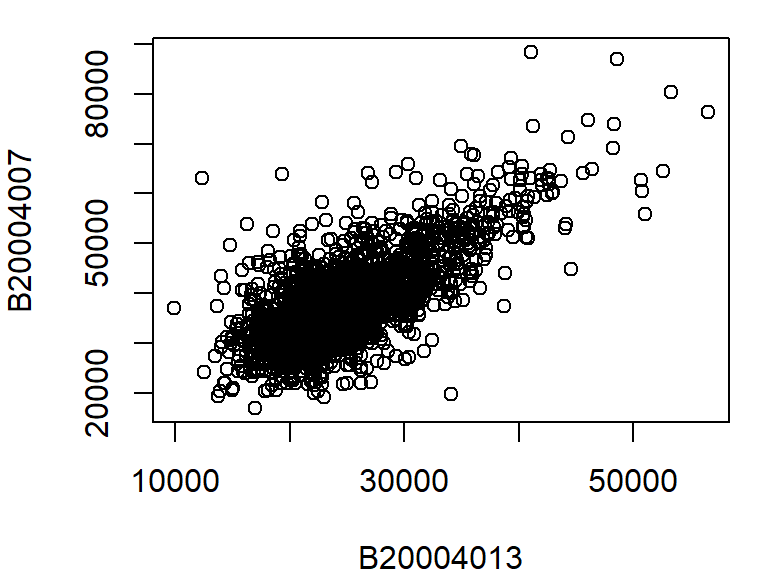
The above plot command takes two arguments: B20004007 ~ B20004013 which is to be read as plot variable B20004007 as a function of B20004013, and dat = dat2 which tells the plot function which data frame to extract the variables from. Another way to call this command is to type:
plot(dat2$B20004007 ~ dat2$B20004013)The plot function can take on many other arguments to help tweak the default plot options. For example, we may want to change the axis labels to something more descriptive than the table variable name:
plot(B20004007 ~ B20004013, dat = dat2,
xlab = "Female median income ($)",
ylab = "Male median income ($)")
There are over 3000 observations in this dataset which makes it difficult the see what may be going on in the cloud of points. We can change the symbol type to solid fill,pch = 20, and set its color to 90% transparent (or 10% opaque) using the expression col = rgb(0, 0, 0, 0.10). The rgb() function defines the intensities for each of the display’s primary colors (on a scale of 0 to 1). The primary colors are red, green and blue. The forth value is optional and provides the fraction opaqueness with a value of 1 being completely opaque.
plot(B20004007 ~ B20004013, dat = dat2,
xlab = "Female median income ($)",
ylab = "Male median income ($)",
pch = 20, col = rgb(0, 0, 0, 0.10) )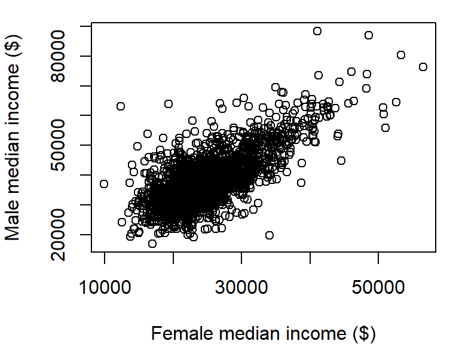
The plot could use additional tweaking, but it may be best to build the plot from scratch as will be demonstrated a few sections down.
By default, the plot command will plot points and not lines. To plot lines, add the type="l" parameter to the plot function. For example, to plot oats crop yield as a function of year from our dat1w dataset, type:
plot(Oats ~ Year, dat = dat1w, type="l",
ylab = "Oats yield (Hg/Ha)" )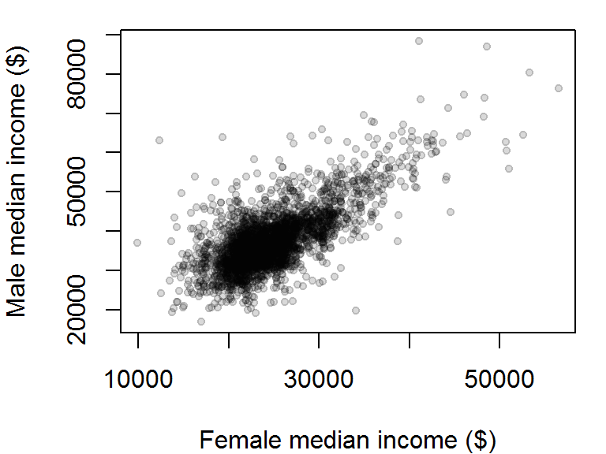
To plot both points and line, set the type parameter to "b" (for both). We’ll also set the point symbol to 20.
plot(Oats ~ Year, dat = dat1w, type = "b", pch = 20,
ylab = "Oats yield (Hg/Ha)" )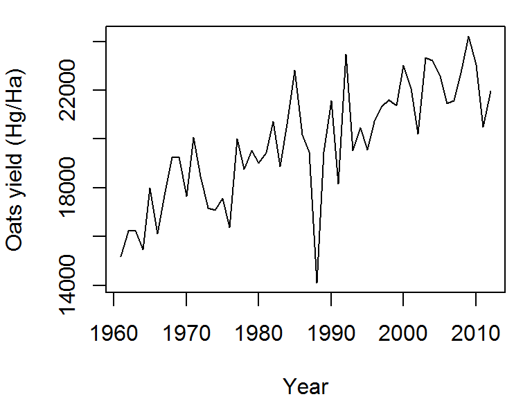
The plot command can only graph on variable. If you want to add another variable, you will need to call the lines function. We will assign a different line type to this second variable (lty = 2):
plot(Oats ~ Year, dat = dat1w, type = "l",
ylab = "Oats yield (Hg/Ha)" )
lines(Barley ~ Year, dat = dat1w, lty = 2)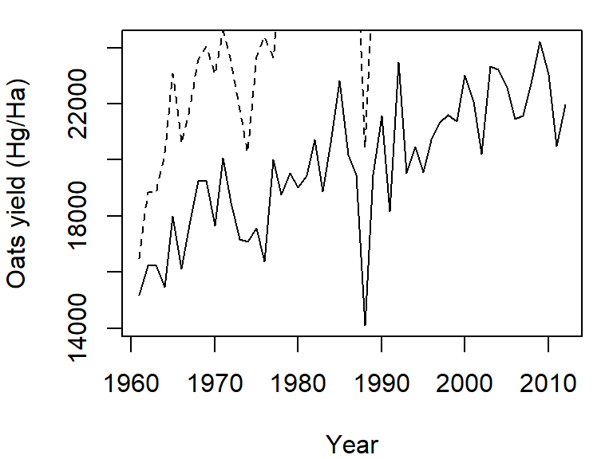
Note how the plot does not automatically re-scale to accommodate the new line. The plot is a static object meaning that we need to define the axes limits before calling the original plot function. Both axes limits can be set using the xlim and ylim parameters. We don’t need to set the x-axis range since both variables cover the same year range. We will therefore only focus on the y-axis limits. We can grab both the minimum and maximum values for the variables Oats and Barley using the range function, then pass the range to the ylim parameter in the call to plot.
y.rng <- range( c(dat1w$Oats, dat1w$Barley) )
plot(Oats ~ Year, dat = dat1w, type = "l", ylim = y.rng,
ylab = "Oats yield (Hg/Ha)")
lines(Barley ~ Year, dat = dat1w, lty = 2)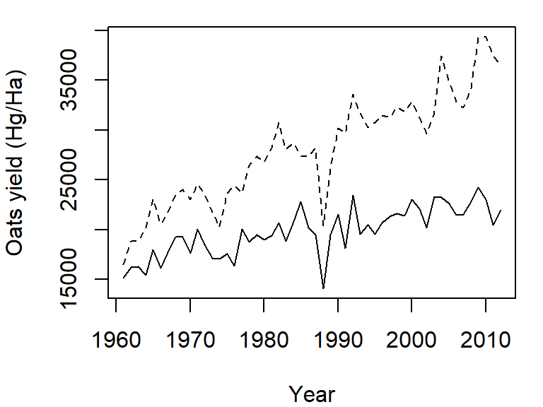
Point plots from different variables can also be combined into a single plot using the points function in lieu of the lines function. In the following example, male vs. female income for population having a high school degree (blue dots) and a Bachelor’s degree (red dots) will be overlaid on the same plot. We’ll also add a legend in the top-right corner.
y.rng <- range( c(dat2$B20004009, dat2$B20004011) , na.rm = TRUE)
x.rng <- range( c(dat2$B20004015, dat2$B20004017) , na.rm = TRUE)
# Plot income for HS degree
plot(B20004009 ~ B20004015, dat = dat2, pch = 20, col = rgb(0, 0, 1, 0.10),
xlab = "Female median income ($)",
ylab = "Male median income ($)",
xlim = x.rng, ylim = y.rng)
# Add points for Bachelor's degree
points(dat2$B20004011 ~ dat2$B20004017, dat = dat2, pch = 20,
col = rgb(1,0,0,0.10))
# Add legend
legend("topright", c("HS Degree", "Bachelor's"), pch = 20,
col = c(rgb(0, 0, 1, 1), rgb(1, 0, 0, 1) ))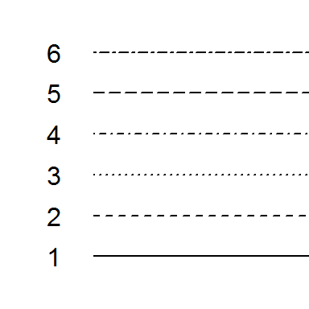
The na.rm = TRUE option is added as a parameter in the range function to prevent an NA value in the data from returning an NA value in the range.
Point symbols are defined by a numeric code. The following figure shows the list of point symbols available in R along with their numeric designation as used with the pch = argument. The symbol’s color can be defined using the col parameter. For symbols 21 through 25, which have a two-color scheme, col applies to the outline color (blue in the following figure) and bg parameter applies to the fill color (red in the following figure).
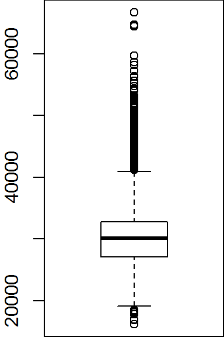
You can define the color using the rgb() function, or by a color name such as col = "red" or col = "bisque". For a full list of color names, type colors() at a command prompt.
Line types can also be customized in the plot function using the lty = parameter. There are six different line types, each identified by a number:
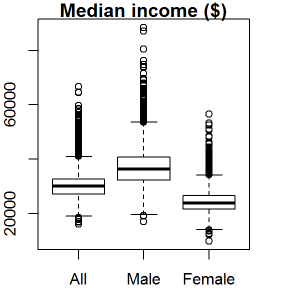
Boxplots
A boxplot is one of many graphical tools used to summarize the distribution of a data batch. The graphic consists of a “box” that depicts the range covered by 50% of the data (aka the interquartile range, IQR), a horizontal line that displays the median, and “whiskers” that depict 1.5 times the IQR or the largest (for the top half) or smallest (for the bottom half) values.
For example, we can summarize the income range for all individuals as follows:
boxplot(dat2$B20004001, na.rm = TRUE)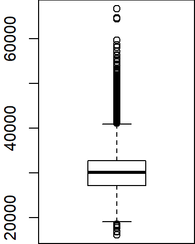
Note that the boxplot function has no option to specify the data frame as is the case with the plot function; we must therefore pass it both the data frame name and the variable as a single argument (i.e. dat2$B20004001).
Several variables can be summarized on the same plot.
boxplot(dat2$B20004001, dat2$B20004007, dat2$B20004013,
names = c("All", "Male", "Female"), main = "Median income ($)")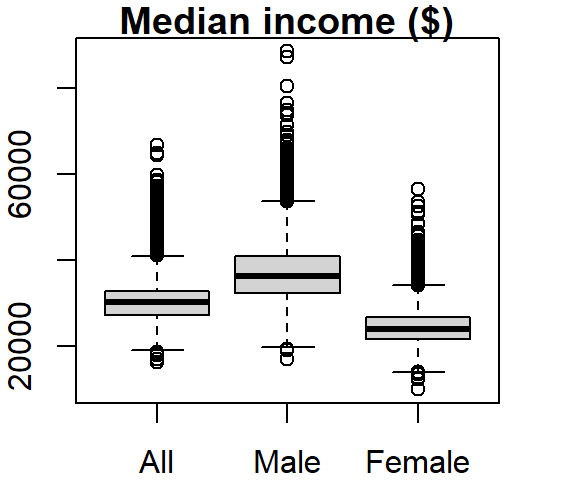
The names argument labels the x-axis and the main argument labels the plot title.
The outliers can be removed from the plot, if desired, by setting the outline parameter to FALSE:
boxplot(dat2$B20004001, dat2$B20004007, dat2$B20004013,
names = c("All", "Male", "Female"), main = "Median income ($)",
outline = FALSE)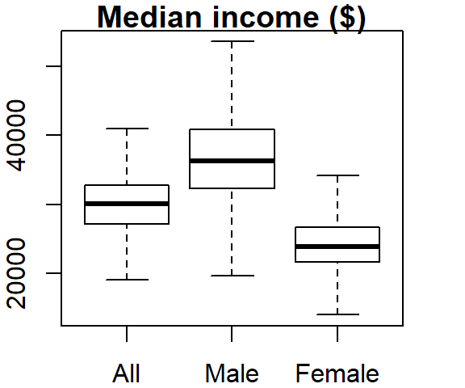
The boxplot graph can also be plotted horizontally by setting the horizontal parameter to TRUE:
boxplot(dat2$B20004001, dat2$B20004007, dat2$B20004013,
names = c("All", "Male", "Female"), main = "Median income ($)",
outline = FALSE, horizontal = TRUE)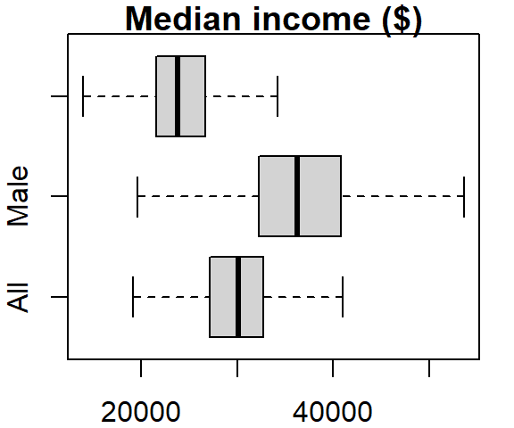
The last two plots highlight one downside in using a table in a wide format: the long series of column names passed to the boxplot function. It’s more practical to store such data in long form. To demonstrate this, let’s switch back to the crop data. To plot all columns in dat1w, we would need to type:
boxplot(dat1w$Barley, dat1w$Buckwheat, dat1w$Maize, dat1w$Oats,dat1w$Rye,
names=c("Barley", "Buckwheat", "Maize", "Oats", "Rye"))
If you use the long version of that table, the command looks like this:
boxplot(Yield ~ Crop, dat1l)
where ~ Crop tells the function to split the boxplots across unique Crop levels.
One can order the boxplots based on the median values. By default, boxplot will order the boxplots following the factor’s level order. In our example, the crop levels are ordered alphabetically. To reorder the levels following the median values of yields across each level, we can use the reorder() function:
dat1l$Crop.ord <- reorder(dat1l$Crop, dat1l$Yield, median)This creates a new variable called Crop.ord whose values mirror those in variable Crop but differ in the underlying level order:
levels(dat1l$Crop.ord)[1] "Buckwheat" "Rye" "Oats" "Barley" "Maize" If we wanted the order to be in descending order, we would prefix the value parameter with the negative operator as in reorder(dat1l$Crop, -dat1l$Yield, median).
The function reorder takes three arguments: the factor whose levels are to be reordered (Crop), the value whose quantity will determine the new order (Yield) and the statistic that will be used to summarize the values across each factor’s level (median).
The modified boxplot expression now looks like:
boxplot(Yield ~ Crop.ord, dat1l)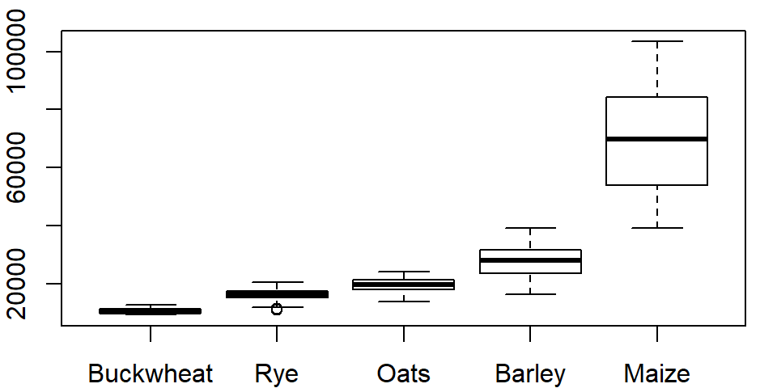
Histograms
The histogram is another form of data distribution visualization. It consists of partitioning a batch of values into intervals of equal length then tallying their count in each interval. The height of each bar represents these counts. For example, we can plot the histogram of maize yields using the hist function as follows:
hist(dat1w$Maize, xlab = "Maize", main = NA)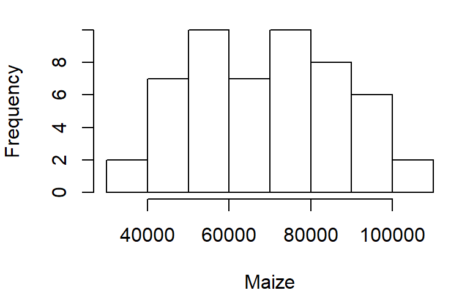
The main = NA argument suppresses the plot title.
To control the number of bins add the breaks argument. The breaks argument can be passed different types of values. The simplest value is the desired number of bins. Note, however, that you might not necessarily get the number of bins defined with the breaks argument. For example assigning the value of 10 to breaks generates a 14 bin histogram.
hist(dat1w$Maize, xlab = "Maize", main = NA, breaks = 10)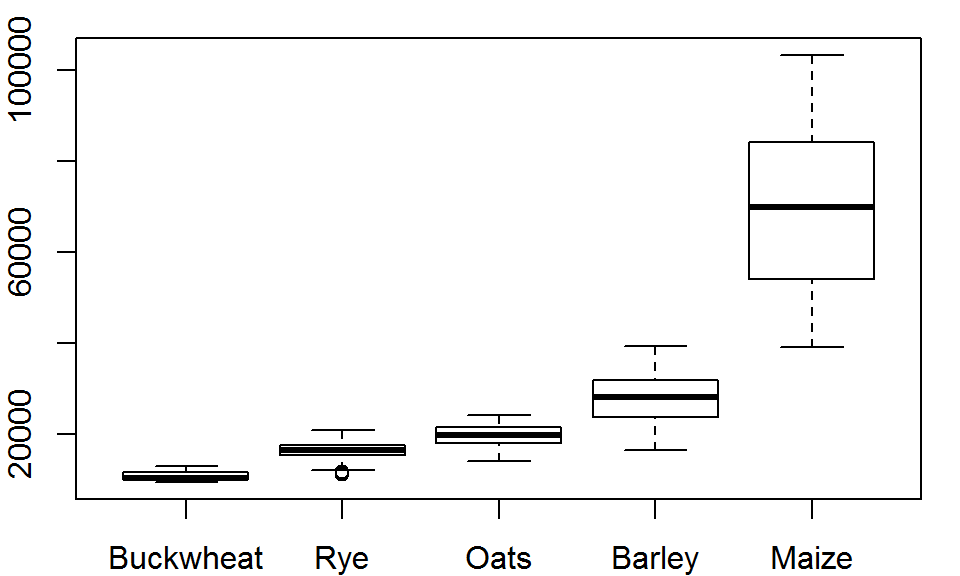
The documentation states that the breaks value “is a suggestion only as the breakpoints will be set to pretty values”. pretty refers to a function that rounds values to powers of 1, 2 or 5 times a power of 10.
If you want total control of the bin numbers, manually create the breaks as follows:
n <- 10 # Define the number of bin
minx <- min(dat1w$Maize, na.rm = TRUE)
maxx <- max(dat1w$Maize, na.rm = TRUE)
bins <- seq(minx, maxx, length.out = n +1)
hist(dat1w$Maize, xlab = "Maize", main = NA, breaks = bins)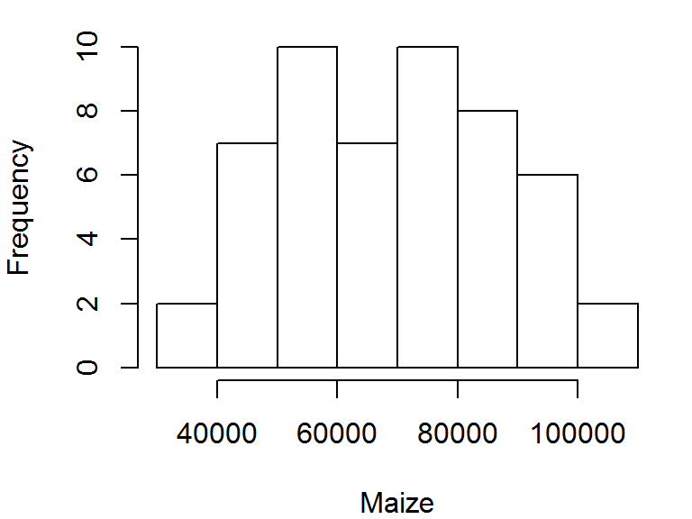
Density plot
Histograms have their pitfalls. For example, the number of bins can drastically affect the appearance of a distribution. One alternative is the density plot which, for a series of x-values, computes the density of observations at each x-value. This generates a “smoothed” distribution of values.
Unlike the other plotting functions, density does not generate a plot but a list object instead. But the output of density can be wrapped with a plot function to generate the plot.
dens <- density(dat1w$Maize)
plot(dens, main = "Density distribution of Maize yields")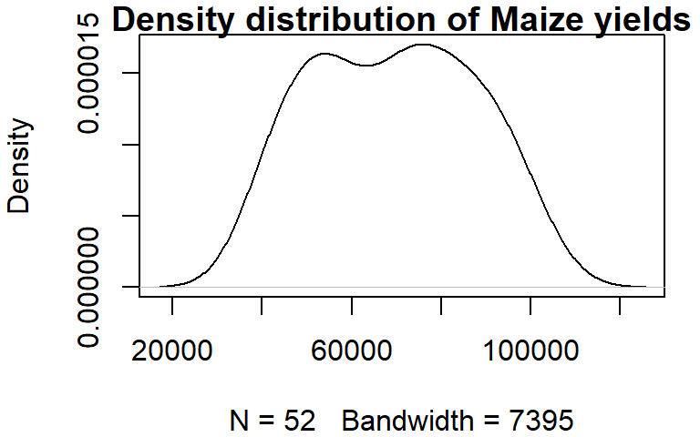
You can control the bandwidth using the bw argument. For example:
dens <- density(dat1w$Maize, bw = 4000)
plot(dens, main = "Density distribution of Maize yields")The bandwidth parameter adopts the variable’s units.
Customizing plots
So far, you have learned how to customize point and line symbols, but this may not be enough. You might want to modify other graphic elements such as the axes layout and label formats for publication. Let’s see how we can further customize a plot of median income for male and female population having attained a HS degree.
First, we plot the points but omit the axes and its labels with the parameters axes = FALSE, xlab = NA, ylab = NA. We will want both axes to cover the same range of values, so we will use the range function to find min and max values for both male and female income.
Next, we draw the x axis using the axis function. The first parameter to this function is a number that indicates which axis is to be drawn (i.e. 1=bottom x, 2=left y, 3=top x and 4=right y). We will then use the mtext function to place the axis label under the axis line.
# Plot the points without the axes
rng <- range(dat2$B20004009, dat2$B20004015, na.rm = TRUE)
plot(B20004009 ~ B20004015, dat = dat2, pch = 20, col = rgb(0,0,0,0.15),
xlim = rng, ylim = rng, axes = FALSE, xlab = NA, ylab = NA )
# Plot the x-axis
lab <- c("5,000", "25,000", "45,000", "$65,000")
axis(1, at = seq(5000, 65000, length.out = 4), label = lab)
# Plot x label
mtext("Female median income (HS degree)", side = 1, line = 2)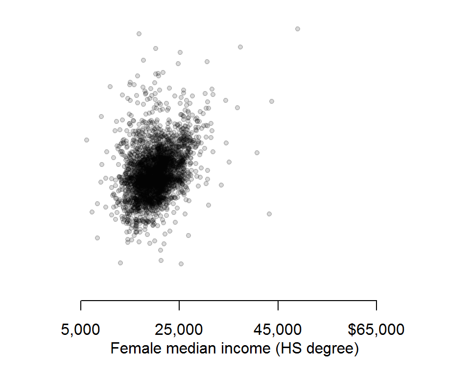
Next, we will tackle the y-axis. We will rotate both the tic labels and axis label horizontally and place the axis label at the top of the axis. This will involve a different approach to that used for the x-axis. First, we need to identify each plot region’s corner coordinate values using the par function. Second, we will use the text function instead of the mtext function to place the axis label.
First, let’s plot the y-axis with the custom tic labels.
# Plot the y-axis
axis(2, las = 1, at = seq(5000,65000, length.out = 4), label = lab)
Now let’s extract the plot’s corner coordinate values.
loc <- par("usr")
loc[1] 3850 68650 3850 68650The corner location coordinate values are in the plot’s x and y units. We want to place the label in the upper left hand corner whose coordinate values are loc[1]= 3850 and loc[2]= 68650.
text(loc[1], loc[4], "Male median\nincome", pos = 3, adj = 1, xpd = TRUE)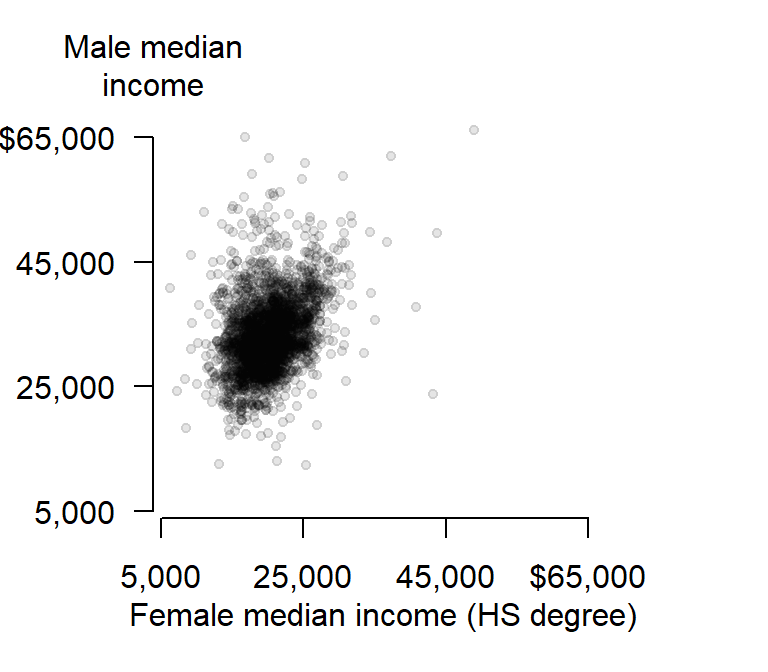
The string \n in the text "Median\nIncome" is interpreted in R as being a carriage return–i.e it forces the text that follows this string to be printed on the next line. The other parameters of interest are pos and adj that position and adjust the label location (type ?axis for more information on axis parameters) and the parameter xpd=TRUE allows for the text function to display text outside of the plot region.
Exporting plots to image file formats
You might need to export your plots as standalone image files for publications. R will export to many different raster image file formats such as jpg, png, gif and tiff, and several vector file formats such as PostScript, svg and PDF. You can specify the image resolution (in dpi), the image height and width, and the size of the margins.
The following example saves the last plot as an uncompressed tiff file with a 5“x6” dimension and a resolution of 300 dpi. This is accomplished by simply book-ending the plotting routines between the tiff() and dev.off() functions:
tiff(filename = "fig1.tif", width = 5, height = 6, units = "in",
compression = "none", res = 300)
# Plot the points without the axes
rng <- range(dat2$B20004009, dat2$B20004015, na.rm = TRUE)
plot(B20004009 ~ B20004015, dat = dat2, pch = 20, col = rgb(0,0,0,0.10),
xlim = rng, ylim = rng, axes = FALSE, xlab = NA, ylab = NA )
# Plot the x-axis
lab <- c("5,000", "25,000", "45,000", "$65,000")
axis(1, at = seq(5000,65000, length.out = 4), label = lab)
# Plot x label
mtext("Female median income (HS degree)", side = 1, line = 2)
# Plot the y-axis
axis(2, las = 1, at = seq(5000,65000, length.out = 4), label = lab)
text(loc[1], loc[4], "Male median\nincome", pos = 3, adj = 1, xpd = TRUE)
dev.off()To save the same plot to a pdf file format, simply substitute tiff() with pdf() and adjust the parameters as needed:
pdf(file = "fig1.pdf", width = 5, height = 6)
# Plot the points without the axes
rng <- range(dat2$B20004009, dat2$B20004015, na.rm = TRUE)
plot(B20004009 ~ B20004015, dat = dat2, pch = 20, col = rgb(0,0,0,0.15),
xlim = rng, ylim = rng, axes = FALSE, xlab = NA, ylab = NA )
# Plot the x-axis
lab <- c("5,000", "25,000", "45,000", "$65,000")
axis(1, at = seq(5000,65000, length.out=4), label = lab)
# Plot x label
mtext("Female median income (HS degree)", side = 1, line = 2)
# Plot the y-axis
axis(2, las = 1, at = seq(5000,65000, length.out = 4), label = lab)
text(loc[1], loc[4], "Male median\nincome", pos = 3, adj = 1, xpd = TRUE)
dev.off() Manny Gimond (2021)
Manny Gimond (2021)